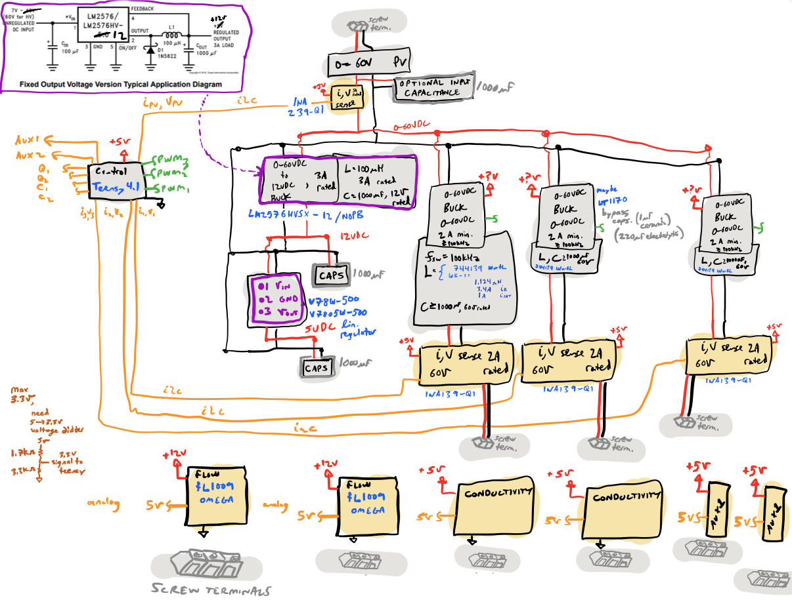
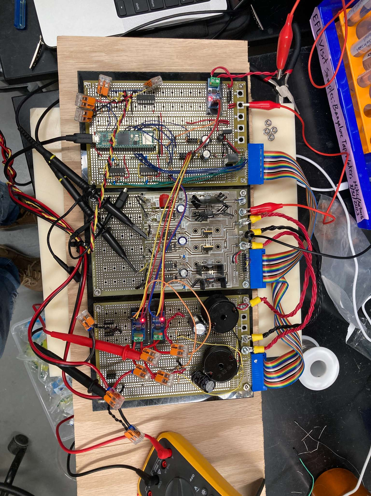
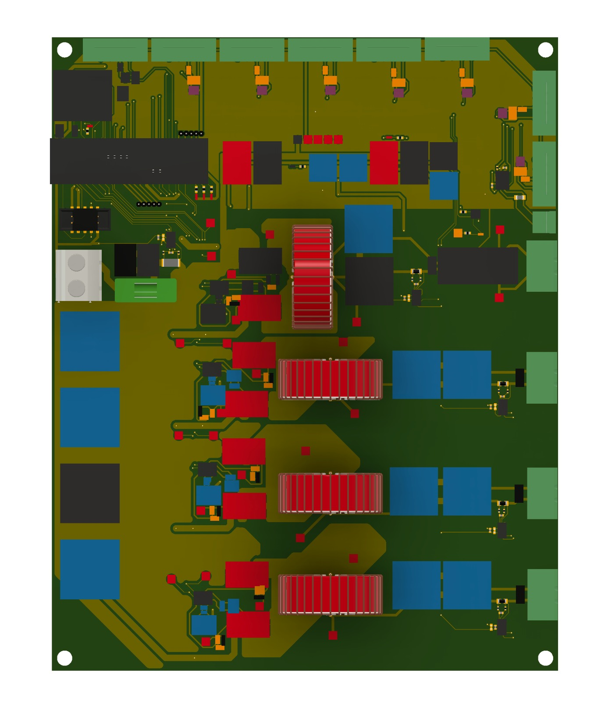
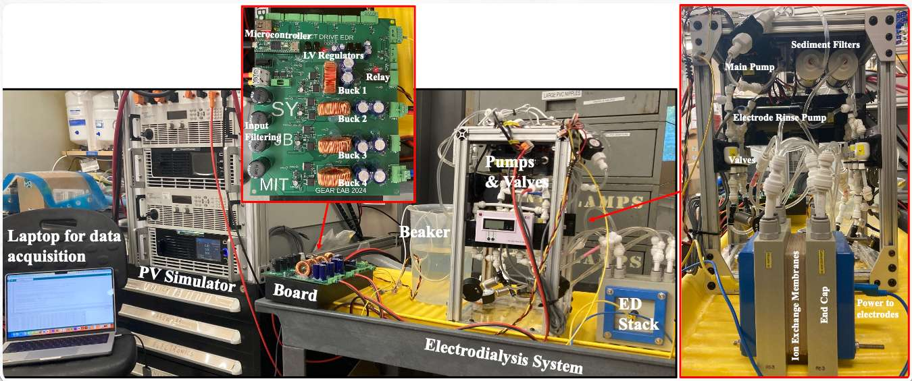

Electrodialysis Maximum Power Point Tracker.
Background
Typical solar-powered applications in off-grid environments utilize a Maximum Power Point Tracker (MPPT) to charge a battery, which then stabilizes the power for downstream loads. However, for resilient water systems like Electrodialysis (ED) desalination—which can operate effectively at variable power levels—a "direct-drive" configuration without energy storage offers a simpler and lower-cost solution.
Problem
Coordinating multiple variable loads to ensure a solar array remains at its peak efficiency is a significant technical challenge. Traditional power electronics are not designed to manage multiple parallel converters for a single array while simultaneously meeting the specific voltage and current requirements of separate desalination stacks. Without integrated control, these systems risk instability and significant power losses.
Solution
I developed an integrated multi-converter MPPT control architecture specifically for direct-driving variable loads. By using a single PV voltage sensor and multiple current sensors, the controller algorithmically adjusts the duty cycles of parallel buck-boost converters to maintain the array at the Maximum Power Point. You can review some of my technical thinking and design notes here.
Academic Documentation
Download the full Manuscript Draft [PDF]


